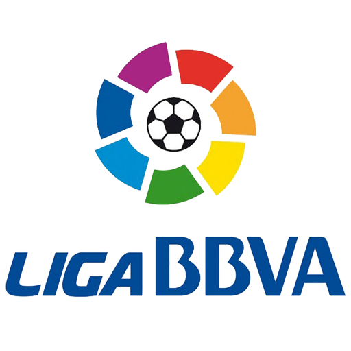
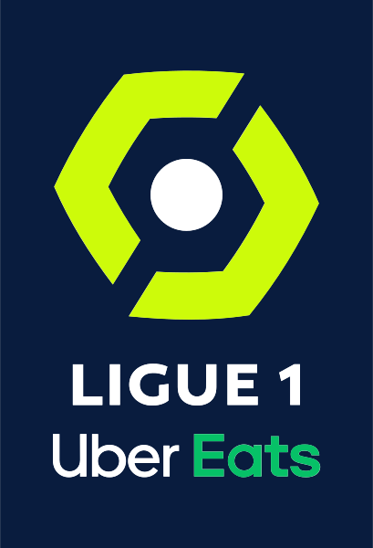
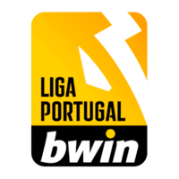

La Liga
The Liga Nacional de Fútbol Profesional was founded in 1984 and is part of the Spanish Football Federation (RFEF).The 42 member clubs of LaLiga are grouped into two divisions
Premier League
The Premier League, Contested by 20 clubs, the English Football League (EFL). The competition was founded as the FA Premier League on 20 February 1992 following the decision of clubs in the Football League First Division to break away from the Football League
Serie A
Serie A, is a professional league competition for football clubs located at the top of the Italian football league, the winner is awarded the Scudetto and the Coppa Campioni d'Italia. It has been operating for over ninety years since the 1929–30 season, Number of teams 20
Bundesliga
The Bundesliga is a professional association football league in Germany. All of the Bundesliga clubs qualify for the DFB-Pokal. The winner of the Bundesliga qualifies for the DFL-Supercup.
ligue One
Ligue 1,officially known as Ligue 1 Uber Eats for sponsorship reasons. At the top of the French football league system, Ligue 1 is contested by 20 clubs and operates on a system of promotion and relegation from and to Ligue 2. Seasons run from August to May.
The Primeira Liga
The Primeira Liga, also known as Liga Portugal Bwin for sponsorship reasons, the Primeira Liga is contested by 18 teams, with the two lowest placed teams relegated to the LigaPro and replaced by the top-two non-reserve teams from this division